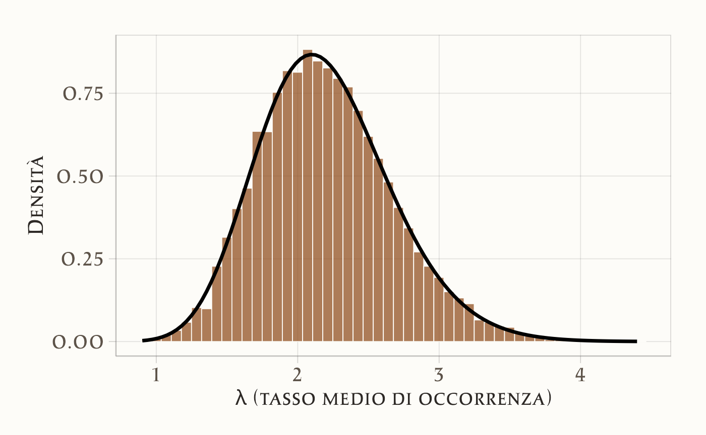
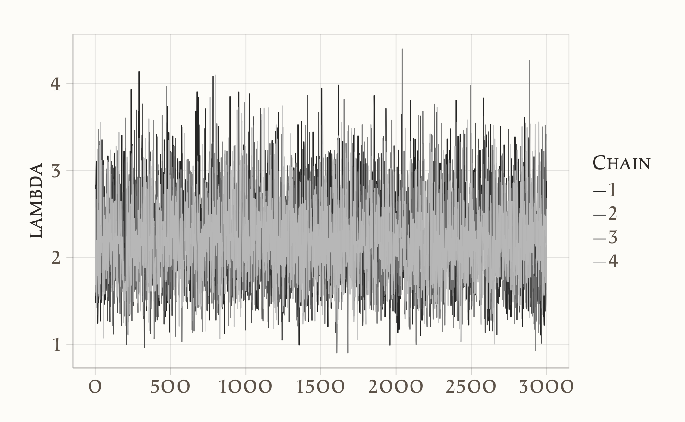
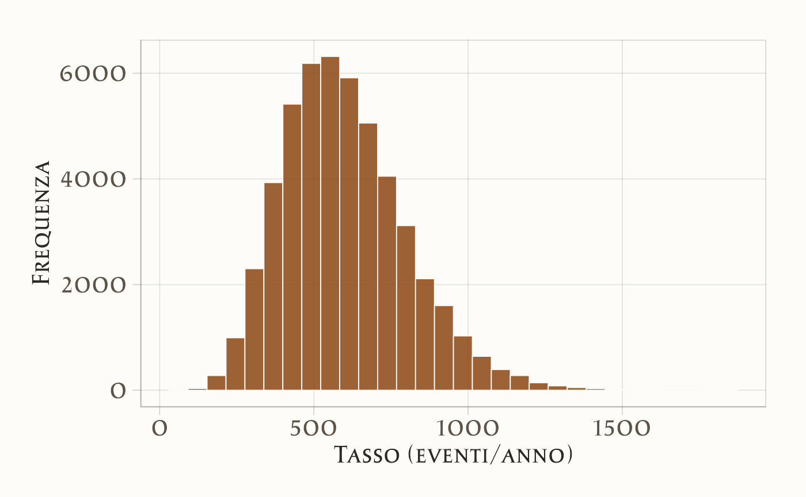
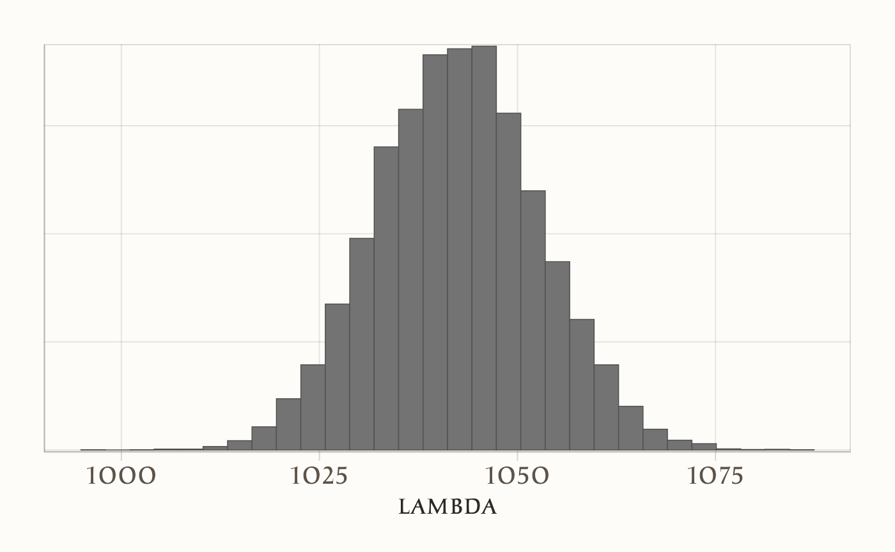
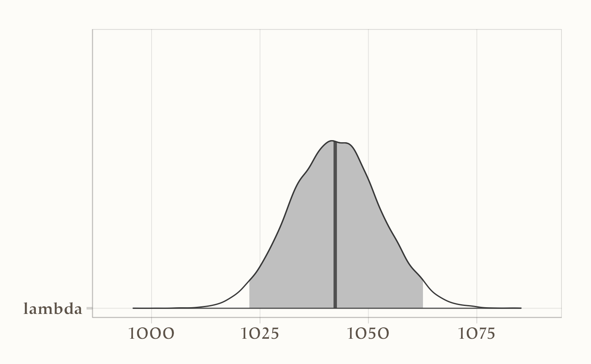
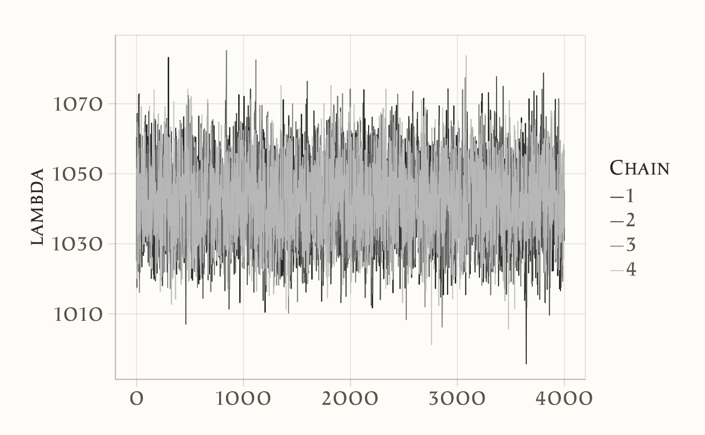

here::here("code", "_common.R") |>
source()
if (!requireNamespace("pacman")) install.packages("pacman")
pacman::p_load(cmdstanr, posterior, bayesplot, ggplot2, tidyverse, tibble)
conflicts_prefer(posterior::ess_bulk)
conflicts_prefer(posterior::ess_tail)
conflicts_prefer(dplyr::count)19 Modello di Poisson
Introduzione
Nei capitoli precedenti abbiamo visto come utilizzare Stan per analizzare un problema familiare, quello delle proporzioni, introducendo l’odds ratio come primo esempio pratico. In questo capitolo allarghiamo l’orizzonte a un’altra classe di dati molto comune in psicologia: i conteggi.
Molti fenomeni sperimentali e clinici si presentano sotto forma di conteggi. Pensiamo al numero di errori commessi in un compito di attenzione, al numero di risposte corrette in una sessione di apprendimento, o al numero di episodi sintomatici riportati in un diario clinico. In tutti questi casi, il modello probabilistico di riferimento è spesso la distribuzione di Poisson, che descrive il numero di eventi osservati in un dato intervallo di tempo o di prove, quando gli eventi hanno una probabilità media di verificarsi.
Il modello di Poisson rappresenta quindi un banco di prova ideale per consolidare due aspetti fondamentali: da un lato, la generalità dell’inferenza bayesiana – la logica rimane la stessa, cambiano solo la forma della verosimiglianza e i parametri da stimare –; dall’altro, la potenza di Stan come strumento pratico per affrontare modelli che, pur essendo concettualmente semplici, diventano rapidamente complicati se implementati a mano.
In questo capitolo mostreremo come specificare e stimare un modello di Poisson in Stan, partendo da un esempio psicologico concreto. Questo ci consentirà di acquisire familiarità con un nuovo tipo di dati e di consolidare la logica bayesiana in un contesto diverso, preparandoci ad affrontare nei capitoli successivi modelli più articolati e multilivello.
Panoramica del capitolo
- Capire quando usare un modello di Poisson (conteggi non negativi, tendenzialmente rari, indipendenti dato il tasso).
- Scrivere un modello in Stan con parametri su scala naturale (qui:
lambdacome tasso medio). - Impostare prior debolmente informative su
lambdao sul suo log (per mantenere positività e stabilità numerica). - Eseguire stima MCMC con
cmdstanre leggere i diagnostici di convergenza. - Fare posterior predictive checks (PPC) per valutare l’adeguatezza del modello.
19.1 Dal modello teorico al modello computazionale
Quando raccogliamo dati in psicologia, non ci interessa solo descrivere quello che è accaduto nel nostro campione, ma soprattutto stimare il processo che genera i dati nella popolazione.
Immaginiamo di osservare, in otto finestre temporali di pari durata, quante volte si verifica un certo evento psicologico o comportamentale. Per esempio, il numero di compulsioni in otto momenti della giornata, oppure il numero di telefonate ricevute in otto turni orari.
I dati raccolti sono:
y <- c(2, 1, 3, 2, 2, 1, 1, 1)Abbiamo quindi \(N = 8\) osservazioni. Dal campione potremmo calcolare una semplice media (\(\bar y = 1.625\)), ma questo ci dice solo quanto spesso l’evento è avvenuto nei nostri dati. La domanda più interessante è:
qual è il tasso medio di occorrenza nella popolazione?
Chiamiamo questo tasso \(\lambda\): il numero medio di eventi attesi in una finestra temporale.
19.1.1 Perché serve un modello probabilistico?
I dati osservati sono solo un piccolo campione e possono variare da una raccolta all’altra. Un modello probabilistico ci serve per due motivi principali:
- Separare il segnale dal rumore: capire quanto dell’andamento osservato è dovuto al caso e quanto riflette una regolarità della popolazione.
- Quantificare l’incertezza: non ci basta stimare \(\lambda\), vogliamo anche dire quanto siamo sicuri (o incerti) di quella stima.
19.1.2 Il modello di Poisson
Per i fenomeni di conteggio (quante volte un evento si verifica in un intervallo), il modello naturale è la distribuzione di Poisson:
\[ y_i \sim \text{Poisson}(\mu_i), \qquad \mu_i = \lambda \cdot t_i \] dove:
- \(y_i\) è il numero osservato di eventi nella finestra \(i\),
- \(t_i\) è la durata della finestra,
- \(\lambda\) è il tasso medio.
Nel nostro caso tutte le finestre hanno la stessa durata (\(t_i = 1\)), e quindi:
\[ P(y_i \mid \lambda) = \frac{\lambda^{y_i} e^{-\lambda}}{y_i!}, \qquad \mathbb{E}[y_i]=\lambda, \quad \mathrm{Var}(y_i)=\lambda. \] In parole semplici: \(\lambda\) rappresenta quanti eventi in media ci aspettiamo per finestra.
19.1.3 La distribuzione a priori
Nell’approccio bayesiano dobbiamo dichiarare che cosa riteniamo plausibile per \(\lambda\) prima di osservare i dati. Per i modelli di Poisson la scelta naturale è la distribuzione Gamma. Ad esempio, una prior Gamma(9, 2) esprime l’idea che, prima di osservare i dati, ci aspettiamo circa 4–5 eventi per finestra, ma lasciamo spazio a una certa variabilità.
19.1.4 Perché usiamo Stan?
Potremmo calcolare la distribuzione a posteriori anche con formule chiuse (qui la posterior è ancora una Gamma). Ma usiamo Stan per due motivi didattici fondamentali:
- Generalizzare: nella pratica incontreremo modelli per cui non esiste una soluzione analitica semplice. Con Stan impariamo un workflow valido in tutti i casi.
- Quantificare l’incertezza: Stan ci fornisce direttamente campioni dalla distribuzione a posteriori, che possiamo usare per costruire intervalli credibili, fare previsioni, confrontare modelli, ecc.
19.1.5 Obiettivi del modello in Stan
Con questo primo esempio vogliamo:
- stimare \(\lambda\), il tasso medio di occorrenza nella popolazione;
- ottenere una misura della nostra incertezza su \(\lambda\);
- verificare che i campioni generati da Stan coincidano con i risultati della formula analitica (dove è disponibile).
In questo modo ci abituiamo a un flusso di lavoro che useremo anche per modelli molto più complessi, in cui solo un approccio computazionale ci permette di fare inferenza bayesiana.
19.2 Scrivere il modello in Stan
Un modello Stan è diviso in blocchi: data (dati), parameters (incognite), model (priori + verosimiglianza). Aggiungiamo anche generated quantities per quantità derivate utili al confronto con la soluzione analitica (e, volendo, per LOO).
Per evitare dipendenze da percorsi locali, creiamo e compiliamo il modello direttamente dalla stringa:
stan_code <- "
data {
int<lower=0> N;
array[N] int<lower=0> y;
real<lower=0> alpha_prior;
real<lower=0> beta_prior;
}
parameters {
real<lower=0> lambda;
}
model {
lambda ~ gamma(alpha_prior, beta_prior);
y ~ poisson(lambda);
}
generated quantities {
real alpha_post = alpha_prior + sum(y);
real beta_post = beta_prior + N;
array[N] real log_lik;
for (i in 1:N) log_lik[i] = poisson_lpmf(y[i] | lambda);
}
"Compiliamo:
mod <- cmdstan_model(write_stan_file(stan_code))Prepariamo i dati:
Una volta preparati i dati, lanciamo il campionamento:
fit <- mod$sample(
data = stan_data,
seed = 123,
chains = 4,
parallel_chains = 4,
iter_sampling = 3000,
iter_warmup = 2000,
refresh = 0
)19.2.1 Analizzare i risultati
Una volta che Stan ha terminato il campionamento, otteniamo migliaia di valori possibili di \(\lambda\), campionati dalla distribuzione a posteriori. Questi valori ci permettono di “vedere” la distribuzione a posteriori invece di calcolarla solo con una formula.
19.2.1.1 Estraiamo i campioni di \(\lambda\)
Estraiamo i valori campionati di λ dalla posterior. L’oggetto draws restituisce tutti i campioni MCMC, noi qui selezioniamo solo il parametro lambda:
posterior_draws <- fit$draws("lambda", format = "df")Creiamo un vettore con solo i valori di lambda:
lambda_samples <- posterior_draws$lambdaOra lambda_samples contiene migliaia di valori di \(\lambda\): possiamo usarli per calcolare media, intervalli credibili e per costruire grafici.
19.2.1.2 Calcoliamo i parametri della distribuzione posteriore teorica
Dato che in questo caso abbiamo una posterior coniugata, conosciamo la formula esatta della distribuzione a posteriori (Gamma). Ci serve per confrontarla con i campioni generati da Stan:
alpha_post <- alpha_prior + sum(y) # nuovo parametro shape
beta_post <- beta_prior + N # nuovo parametro rate19.2.1.3 Confrontiamo i due risultati (MCMC vs formula)
Creiamo un grafico che mostri l’istogramma dei campioni ottenuti con Stan (in azzurro) e la curva della distribuzione Gamma calcolata analiticamente (in rosso).
ggplot(data.frame(lambda = lambda_samples), aes(x = lambda)) +
# Istogramma dei campioni posteriori
geom_histogram(
aes(y = after_stat(density)),
bins = 50,
alpha = 0.7
) +
# Curva teorica Gamma con parametri aggiornati
stat_function(
fun = function(x) dgamma(x, shape = alpha_post, rate = beta_post),
linewidth = 1.2
) +
labs(
x = "λ (tasso medio di occorrenza)",
y = "Densità"
)
Il confronto visivo è molto utile:
- l’istogramma mostra la distribuzione stimata con Stan tramite campionamento MCMC,
- la curva rossa rappresenta la distribuzione teorica Gamma–Poisson che conosciamo già.
Se le due coincidono (entro piccole fluttuazioni casuali), significa che Stan ha fatto un buon lavoro: il nostro workflow MCMC funziona!
19.2.2 Intervallo di credibilità
Un grande vantaggio dell’approccio bayesiano è che non otteniamo solo una stima puntuale di \(\lambda\), ma una distribuzione completa dei valori plausibili. Da questa distribuzione possiamo ricavare un intervallo di credibilità: un intervallo che contiene, ad esempio, il 94% o il 95% della massa a posteriori.
19.2.2.1 Calcoliamo i quantili della distribuzione
Calcoliamo i quantili al 3%, 50% (mediana) e 97%:
- il valore al 50% è la mediana della distribuzione a posteriori,
- i valori al 3% e 97% delimitano un intervallo centrale che contiene il 94% della distribuzione.
19.2.2.2 Interpretazione dei risultati
I risultati ottenuti indicano che:
- il valore “tipico” di \(\lambda\) (mediana) è circa 2.2 eventi per finestra,
- c’è un 94% di probabilità che \(\lambda\) si trovi tra 1.42 e 3.20.
L’informazione più importante non è tanto la stima puntuale (2.2), ma il fatto che possiamo quantificare la nostra incertezza: la posterior ci dice chiaramente quali valori di \(\lambda\) sono più o meno plausibili.
19.2.3 Diagnostica essenziale
Dopo il campionamento MCMC, è fondamentale verificare che le catene abbiano esplorato bene la distribuzione a posteriori. Per questo guardiamo due tipi di informazioni: indici numerici (come \(\hat{R}\) e ESS) e grafici delle catene (traceplot).
Possiamo ottenere una sintesi numerica della distribuzione a posteriore dei parametri con la funzione summarise_draws del pacchetto posterior:
posterior::summarise_draws(fit$draws("lambda"), rhat, ess_bulk, ess_tail)
#> # A tibble: 1 × 4
#> variable rhat ess_bulk ess_tail
#> <chr> <dbl> <dbl> <dbl>
#> 1 lambda 1.002 4666.651 6265.973\(\hat{R}\) (R-hat): misura la convergenza delle catene. Valori vicini a 1.00 indicano che le catene si sono mescolate bene; valori maggiori di 1.01 segnalano possibili problemi.
-
ESS (Effective Sample Size): indica quanti campioni “indipendenti” equivalenti abbiamo ottenuto.
-
ess_bulkvaluta la precisione delle stime centrali (media, mediana). -
ess_tailvaluta la precisione nelle code della distribuzione (intervalli credibili). Più sono grandi, meglio è: in genere migliaia di campioni equivalenti sono più che sufficienti.
-
Possiamo generare un traceplot con la funzione mcmc_trace di bayesplot:
bayesplot::mcmc_trace(fit$draws("lambda")) 
Il traceplot mostra l’andamento dei valori di \(\lambda\) campionati dalle diverse catene. Se le catene:
- oscillano liberamente attorno alla stessa regione,
- senza trend sistematici o salti strani,
allora possiamo concludere che il campionamento è avvenuto correttamente.
In sintesi: se \(\hat{R} \approx 1\), ESS è elevato e i traceplot sono ben mescolati, possiamo fidarci delle stime ottenute.
19.3 Sparatorie mortali
Nella sezione precedente abbiamo esaminato il processo di derivazione della distribuzione a posteriori per i parametri della distribuzione Gamma, la quale viene impiegata quando si adotta un prior Gamma per una verosimiglianza di Poisson. In questo esempio, useremo tale metodo per affrontare una questione relativa all’analisi di un set di dati reali.
19.3.1 Domanda della ricerca
Come spiegato qui, i dati che esamineremo sono raccolti dal Washington Post con lo scopo di registrare ogni sparatoria mortale negli Stati Uniti ad opera di agenti di polizia, a partire dal 1° gennaio 2015. Il Washington Post ha adottato un approccio sistematico e accurato nella raccolta di queste informazioni, fornendo dati che possono essere utili per valutare i problemi legati alla violenza delle forze di polizia negli Stati Uniti.
Obiettivo. Stimare, per il periodo 2015–ultimo anno completo disponibile, il tasso medio annuo e l’incertezza associata. Poiché il 2025 è incompleto, lo escludiamo.
19.3.2 Svolgimento con R
19.3.2.1 Importazione e pre-processing dei dati
# URL del dataset
url <- "https://raw.githubusercontent.com/washingtonpost/data-police-shootings/master/v2/fatal-police-shootings-data.csv"
# Importa i dati
fps_dat <- read_csv(url, show_col_types = FALSE)
# Conversione colonna date
fps_dat <- fps_dat %>%
mutate(date = ymd(date),
year = year(date))
# Esamina le colonne disponibili
colnames(fps_dat)
#> [1] "id" "date"
#> [3] "threat_type" "flee_status"
#> [5] "armed_with" "city"
#> [7] "county" "state"
#> [9] "latitude" "longitude"
#> [11] "location_precision" "name"
#> [13] "age" "gender"
#> [15] "race" "race_source"
#> [17] "was_mental_illness_related" "body_camera"
#> [19] "agency_ids" "year"
# Filtra eliminando i casi con year == 2025
fps <- fps_dat %>%
filter(year != 2025)
# Conta le occorrenze per anno
year_counts <- fps %>%
count(year, name = "events")
# Mostra i risultati
print(year_counts)
#> # A tibble: 10 × 2
#> year events
#> <dbl> <int>
#> 1 2015 995
#> 2 2016 959
#> 3 2017 984
#> 4 2018 992
#> 5 2019 993
#> 6 2020 1021
#> 7 2021 1050
#> 8 2022 1097
#> 9 2023 1164
#> 10 2024 117519.3.2.2 Modello di Poisson (pooling completo)
Assumiamo \(y_t \sim \text{Poisson}(\lambda)\) con \(\lambda\) costante sul periodo:
\[ y_t \,\sim\, \text{Poisson}(\lambda), \quad t=1,\dots,n. \]
Il supporto di \(\lambda\) è \([0,\infty)\). Si noti che abbiamo considerato i dati come iid. Guardando la serie temporale, però, è ovvio che le cose non stanno così: i valori aumentano nel tempo.
19.3.2.3 Prior
Usiamo una prior coniugata Gamma su \(\lambda\), scelta in modo debolmente informativo. Un’ipotesi ragionevole (da verificare e discutere in aula) è una media a priori di 600 eventi/anno, con deviazione standard 200. In termini Gamma(shape, rate):
\[ \alpha = (\mu/\sigma)^2,\qquad \beta = \mu/\sigma^2. \]
Visualizziamo la prior (campionando in R):
mu <- 600
sigma <- 200
# Parametrizzazione Gamma(shape = k, scale = theta) per la simulazione
theta <- sigma^2 / mu
k <- mu / theta
set.seed(2)
x_draws <- rgamma(50000, shape = k, scale = theta)
ggplot(data.frame(x = x_draws), aes(x = x)) +
geom_histogram(bins = 30) +
labs(
x = "Tasso (eventi/anno)",
y = "Frequenza"
)
19.3.2.4 Modello di Poisson con Stan
Qui stimiamo \(\lambda\) assumendo lo stesso tasso per tutti gli anni (pooling completo). Con prior Gamma in parametrizzazione (shape, rate):
stan_code <- "
data {
int<lower=1> N; // numero di anni
array[N] int<lower=0> y; // conteggi annuali
real<lower=0> alpha_prior; // shape
real<lower=0> beta_prior; // rate
}
parameters {
real<lower=0> lambda; // tasso medio annuo
}
model {
lambda ~ gamma(alpha_prior, beta_prior); // prior Gamma(shape, rate)
y ~ poisson(lambda); // verosimiglianza
}
generated quantities {
real log_lik = poisson_lpmf(y | lambda);
}
"# Dati (usa i conteggi 2015...2024 ordinati)
y_vec <- year_counts$events # ordine per anno; per Poisson i.i.d. l'ordine non incide
# Prior: coerente con la sezione precedente
alpha_prior <- (mu / sigma)^2
beta_prior <- mu / sigma^2
stan_data <- list(
N = length(y_vec),
y = as.integer(y_vec),
alpha_prior = alpha_prior,
beta_prior = beta_prior
)
stan_data
#> $N
#> [1] 10
#>
#> $y
#> [1] 995 959 984 992 993 1021 1050 1097 1164 1175
#>
#> $alpha_prior
#> [1] 9
#>
#> $beta_prior
#> [1] 0.015Compilazione ed esecuzione:
mod <- cmdstan_model(write_stan_file(stan_code))fit <- mod$sample(
data = stan_data,
iter_warmup = 1000,
iter_sampling = 4000,
chains = 4,
seed = 123,
refresh = 0
)Riassunto dei parametri:
fit$summary("lambda")
#> # A tibble: 1 × 10
#> variable mean median sd mad q5 q95 rhat ess_bulk
#> <chr> <dbl> <dbl> <dbl> <dbl> <dbl> <dbl> <dbl> <dbl>
#> 1 lambda 1042.414 1042.349 10.268 10.362 1025.691 1059.529 1.000 6110.780
#> ess_tail
#> <dbl>
#> 1 8233.184posterior::summarise_draws(
fit$draws("lambda"),
mean, sd, ~quantile(.x, c(0.025, 0.5, 0.975))
)
#> # A tibble: 1 × 6
#> variable mean sd `2.5%` `50%` `97.5%`
#> <chr> <dbl> <dbl> <dbl> <dbl> <dbl>
#> 1 lambda 1042.414 10.268 1022.544 1042.349 1062.583Visualizzazione:
bayesplot::mcmc_hist(fit$draws("lambda")) 
bayesplot::mcmc_areas(fit$draws("lambda"), prob = 0.95)
Il grafico mostra che il tasso di sparatorie fatali ha una media annuale di 1042 con CI [1022, 1062].
In sintesi, analizzando i dati compresi tra il 2015 e il 2025 e basandoci su una distribuzione a priori che presuppone una sparatoria mortale al mese per stato, possiamo concludere con un grado di certezza soggettivo del 95% che il tasso stimato di sparatorie fatali da parte della polizia negli Stati Uniti sia di 1028 casi all’anno, con un intervallo di credibilità compreso tra 1022 e 1062.
Diagnostica essenziale:
# Indicatori numerici chiave: Rhat ~ 1, ESS adeguati
posterior::summarize_draws(
fit$draws(c("lambda")), "rhat", "ess_bulk", "ess_tail"
)
#> # A tibble: 1 × 4
#> variable rhat ess_bulk ess_tail
#> <chr> <dbl> <dbl> <dbl>
#> 1 lambda 1.000 6110.780 8233.184# Traceplot di controllo su OR
bayesplot::mcmc_trace(fit$draws("lambda")) 
19.3.2.5 Derivazione analitica (Gamma–Poisson)
Con prior \(\lambda \sim \text{Gamma}(\alpha,\beta)\) e dati \(y_1,\dots,y_n\) i.i.d. Poisson(\(\lambda\)), il posteriore è:
\[ \lambda \mid \mathbf{y} \;\sim\; \text{Gamma}\!\left(\alpha + \sum_{t=1}^n y_t,\;\; \beta + n\right). \] Quindi:
- media posteriore \(\mathbb{E}[\lambda\mid y] = \dfrac{\alpha + \sum y_t}{\beta + n}\);
- ICr 95% con i quantili Gamma al 2.5% e 97.5%.
# Dati e prior come nella sezione Stan
data_vec <- year_counts$events
n <- length(data_vec)
sum_y <- sum(data_vec)
mu <- 600
sigma <- 200
alpha_prior <- (mu / sigma)^2
beta_prior <- mu / sigma^2
# Posterior coniugato
alpha_post <- alpha_prior + sum_y
beta_post <- beta_prior + n
post_mean <- alpha_post / beta_post
ci95 <- qgamma(c(0.025, 0.975), shape = alpha_post, rate = beta_post)
cat("Posterior mean λ:", round(post_mean, 2), "\n")
#> Posterior mean λ: 1042
cat("95% CrI: [", round(ci95[1], 2), ", ", round(ci95[2], 2), "]\n")
#> 95% CrI: [ 1022 , 1062 ]La derivazione analitica e i risultati MCMC coincidono (entro l’errore Monte Carlo).
19.4 Riflessioni conclusive
L’esempio del modello di Poisson ci ha permesso di estendere l’inferenza bayesiana a un nuovo tipo di dati, mostrando la versatilità di Stan nel trattare situazioni diverse. Abbiamo visto che la logica rimane invariata: definiamo un prior, specifichiamo la verosimiglianza (in questo caso di Poisson) e otteniamo una distribuzione a posteriori che rappresenta la nostra incertezza sui parametri.
Dal punto di vista applicativo, questo esempio è particolarmente rilevante per la ricerca psicologica. I dati di conteggio sono onnipresenti, e spesso la loro analisi viene ridotta a modelli frequentisti standardizzati. Con l’approccio bayesiano, invece, possiamo esplicitare le nostre assunzioni, incorporare conoscenze pregresse e comunicare l’incertezza in modo più trasparente.
Il valore didattico di questo capitolo sta nel mostrare la continuità: ciò che abbiamo imparato con le proporzioni e l’odds ratio si applica senza sforzo concettuale anche a contesti diversi. Al tempo stesso, l’uso di Stan ci ha reso evidente che, anche per modelli semplici, il supporto di un PPL è indispensabile quando vogliamo scalare verso situazioni più complesse.
Nei prossimi capitoli faremo proprio questo passo: passeremo da modelli semplici e univariati a strutture più articolate e gerarchiche, scoprendo come l’approccio bayesiano ci permetta di affrontare in modo sistematico la complessità della ricerca psicologica contemporanea.